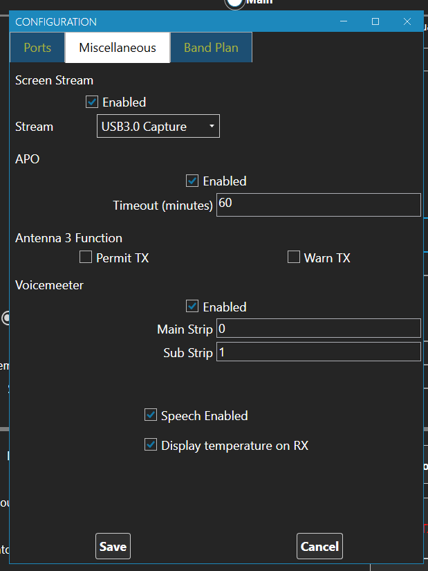
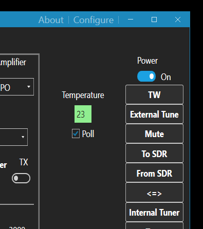

The size and position of all major windows is remembered across invocations of 101Cats. This has the potential to "lose" windows if you make major changes to your monitor configuration, so the hotkey Alt-C has been added which will bring all windows back to the top left corner of the main monitor.
An early demonstration of speech output has been added. Currently, this is limited to announcing changes to the filter width and shift of the main receiver. There is a checkbox in the "miscellaneous" tab of the configuration dialogue box to turn this on and off. This is primarily intended for Thomas (OZ1JT) who has impaired vision, but comments are welcomed from all users.
An option to display the rig temperature at all times rather than only while transmitting has been implemented. This is in response to a request from Kees (ON9KVE) and is still experimental.

When it is enabled, the main window gains a text field for the current temperature and a check box to enable or disable polling. Note that enabling polling will stop the screen saver on the FTdx101 ever activating. This remains an experimental feature and the presentation on the main window may change. Please submit comments and suggestions.

v1.0.9.11
further bugfix - bandplan configuration working properly
V1.0.9.10
bugfix of 1.0.9.9 - removed XSD validation because I got the XSD file wrong
V1.0.9.9
Added initial attempt at Macro Buttons
Implemented Voicemeeter mute strips on transmit
Double click on Voicemeeter slider sets gain to 0dB
The "Macros" button bottom/centre of the main window opens up the macros window. This is divided into a 5x5 grid of buttons that can be programmed up with macro commands. Initially, all buttons are programmed as undefined with a caption of "N/A". You program a button by right clicking on it and selecting "Edit" from the context menu. For each button, you can specify the background and foreground colours and the command that it will trigger.
You enter the macro button colours as text strings - things like "Red", "Green", "LightBlue" - I will get round to making that a combo-box in a future release. The range of available colours is wide and you will be warned if you choose an unrecognised colour - experiment.
The macro definition is a string of one or more CAT commands. For example "FA007074000;MD0C;" will get you ready to run FT8 on 40m. Work out the string with reference to the CAT manual from Yaesu. Alternatively, open the "Trace Window" with the TW button, make your settings with the 101Cats controls and observe the commands sent to the radio in the right hand list box.
The "Save" button lower-left on the Macros window writes the current macro definitions to an XML file called "Macros.xml" - this will be in the directory "G8FXC\101Cats" within your Documents directory.
This is an early release of macros and will be enhanced in the future - feel free to ping me suggestions by email.